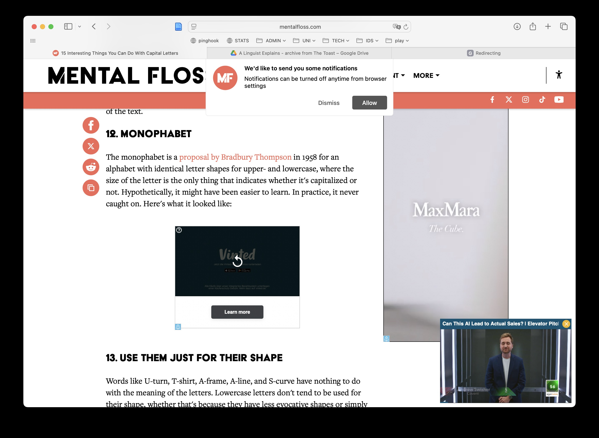

| links | 125 |
| valid | 104 |
| deprecated | 21 |
gretchen mcculloch
page analysis
LX
linguistics & the public
blog analysis
Q
meta
the personal homepage (McCulloch (2014)) functions as landing page to spread articles. as we see in table Table 1, there are some linkings to articles deprecated. many do link to articles behind a paywall (McCulloch (2018)), some are hosted on rather disturbing platforms (McCulloch (2015), cf. Figure 1).

content
plain
the readable articles which i got some overview from, are adressing a linguistically pretrained (or: educated) audience rather than laien, since few words occuring you have to know to understand the context of the explanations which do not dig very deep but cover linguistic aspects in a humorous and entertaining way, i.e. the writing style is rather informal and lazy, but not unelaborated. subjects give interesting insights into some of important yet not always common topics.
framed
| id | key | value |
|---|---|---|
| 1 | who | linguist |
| 2 | target group | educated non-linguist audience |
| 3 | language | english |
| 4 | media form | linked online magazine articles |
| 5 | content availability | depending on linked platforms |
| 6 | intention | spread linguistic knowledge |
| 7 | monetarization | yes |
play
deep
digging deeper into the blog, we find that the site is built upon wordpress and also hosted via wordpress. that hints to some basics to mention.
height
hosting a site via wordpress.com is not a cheap business, cf. Wordpress (2023); the technical affordances are moderate to low i.e. with minimal tech knowledge you can build a nice looking and good working web presence. since the site itself doesnt offer own posts which are not announcements or links to articles on magazines or newspapers, we conclude that its not really active posting here or :content creating: in the sense of a blog. it’s more a landing page for content published elsewhere which means we won’t find content that has not undergone external review process. so no amateur business at all.
actual
concerning our validating the article links provided on the page we can say, that there’s less effort spent on keeping the site uptodate. it’s bit frustrating to land on 404 pages; at least the toast articles are archived at McCulloch (2025).
References
McCulloch, Gretchen. 2014. “Writing.” Gretchen McCulloch. https://gretchenmcculloch.com/writing/.
———. 2015. “15 Interesting Things You Can Do With Capital Letters.” Mental Floss. https://www.mentalfloss.com/article/68376/15-interesting-things-you-can-do-capital-letters.
———. 2018. “The Widely-Spoken Languages We Still Can’t Translate Online.” Wired. https://www.wired.com/story/google-translate-wikipedia-siri-widely-spoken-languages-cant-translate/.
———. 2025. “A Linguist Explains - Archive from The Toast.” Google Drive. https://drive.google.com/drive/folders/1MdtXPaJCLMdsZ9iG-5NCROGizL8Pxskm.
Wordpress. 2023. “WordPress: Kosten WordPress: Preise Tarife Vergleichen.” https://wordpress.com/de/pricing/.